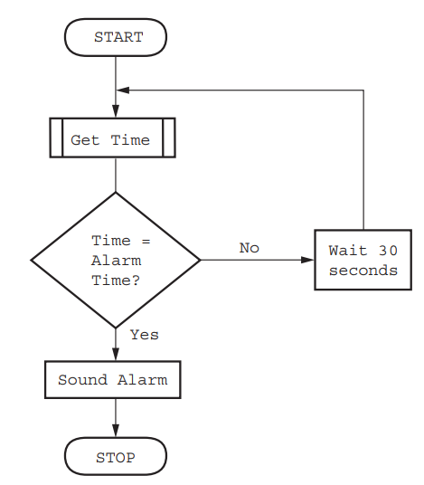
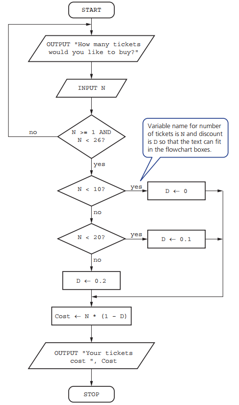

Level 4: Count Controlled loop
IGCSE Computer Science (0478): student notes, prepared by Dr. Hamdeni
IGCSE Computer Science (0478): student notes, prepared by Dr. Hamdeni
The 3 basic programming constructs...
|
..."Loop" is one of them
|
|---|
FOR X ← 0 TO 9 … NEXT X and FOR Counter ← 0 TO 10 … NEXT Counter.
Count controlled loop example
|
More examples
|
|---|

Tickets are sold for a concert at $20 each, if 10 tickets are bought then the discount is 10%, if 20 tickets are bought the discount is 20%. No more than 25 tickets can be bought in a single transaction. This is flowchart showing an algorithm to calculate the cost of buying a given number of tickets:

Outputs: 1, 3, 5, 7, 9.
Outputs: 10, 8, 6, 4, 2, 0.
Outputs: 1, 5, 9.